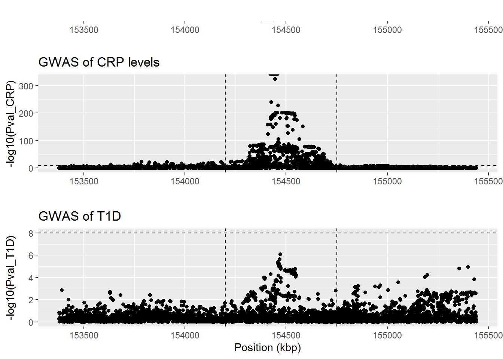
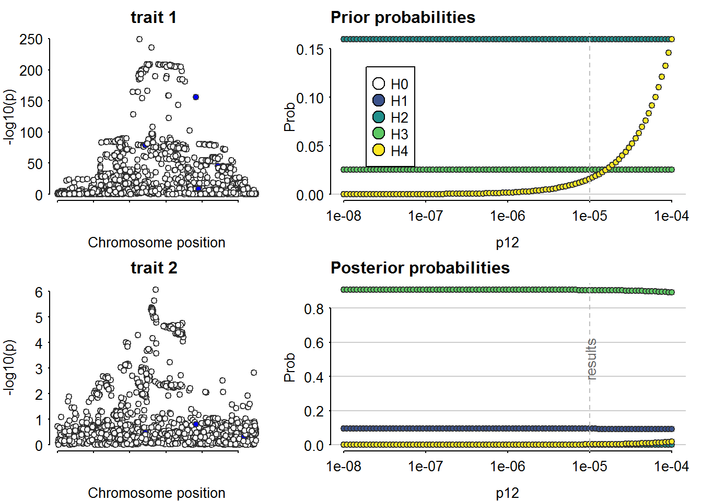

Last updated: 2022-11-05
Checks: 7 0
Knit directory: Rotaatio-2022/
This reproducible R Markdown analysis was created with workflowr (version 1.7.0). The Checks tab describes the reproducibility checks that were applied when the results were created. The Past versions tab lists the development history.
Great! Since the R Markdown file has been committed to the Git repository, you know the exact version of the code that produced these results.
Great job! The global environment was empty. Objects defined in the global environment can affect the analysis in your R Markdown file in unknown ways. For reproduciblity it’s best to always run the code in an empty environment.
The command set.seed(20220313) was run prior to running
the code in the R Markdown file. Setting a seed ensures that any results
that rely on randomness, e.g. subsampling or permutations, are
reproducible.
Great job! Recording the operating system, R version, and package versions is critical for reproducibility.
Nice! There were no cached chunks for this analysis, so you can be confident that you successfully produced the results during this run.
Great job! Using relative paths to the files within your workflowr project makes it easier to run your code on other machines.
Great! You are using Git for version control. Tracking code development and connecting the code version to the results is critical for reproducibility.
The results in this page were generated with repository version 5cf5846. See the Past versions tab to see a history of the changes made to the R Markdown and HTML files.
Note that you need to be careful to ensure that all relevant files for
the analysis have been committed to Git prior to generating the results
(you can use wflow_publish or
wflow_git_commit). workflowr only checks the R Markdown
file, but you know if there are other scripts or data files that it
depends on. Below is the status of the Git repository when the results
were generated:
Ignored files:
Ignored: .RData
Ignored: .Rhistory
Ignored: .Rproj.user/
Ignored: analyses/.Rhistory
Untracked files:
Untracked: .Rprofile
Untracked: .gitattributes
Untracked: .gitignore
Untracked: CRP.Rmd
Untracked: Functional_variants.pdf
Untracked: IL2RA.Rmd
Untracked: IL2RB.Rmd
Untracked: MONDO_0005147-known-drugs.tsv
Untracked: MR-articles-pubmed.csv
Untracked: Mimicking-randomized-controlled-trials-with-genome-wide-data-to-ritta.pptx
Untracked: Mimicking-randomized-controlled-trials-with-genome-wide-data.pptx
Untracked: README.md
Untracked: README.txt
Untracked: _workflowr.yml
Untracked: analyses/CXCL10.Rmd
Untracked: analyses/IL12B.Rmd
Untracked: analyses/IL2RA.Rmd
Untracked: analyses/IL2RB.Rmd
Untracked: analyses/IL6ST.Rmd
Untracked: analyses/JAK2.Rmd
Untracked: analyses/TNF.Rmd
Untracked: analyses/TYK2.Rmd
Untracked: analyses/_site.yml
Untracked: analyses/about.Rmd
Untracked: analyses/figure/
Untracked: analyses/index.Rmd
Untracked: analyses/license.Rmd
Untracked: articles/
Untracked: code/
Untracked: data/
Untracked: figures/
Untracked: guidelines-for-review-of-MR-studies-20177.pdf
Untracked: ld_finnge.zip
Untracked: mendelian randomization.Rproj
Untracked: output/
Unstaged changes:
Modified: analyses/IL6R.Rmd
Note that any generated files, e.g. HTML, png, CSS, etc., are not included in this status report because it is ok for generated content to have uncommitted changes.
These are the previous versions of the repository in which changes were
made to the R Markdown (analyses/CRP.Rmd) and HTML
(docs/CRP.html) files. If you’ve configured a remote Git
repository (see ?wflow_git_remote), click on the hyperlinks
in the table below to view the files as they were in that past version.
| File | Version | Author | Date | Message |
|---|---|---|---|---|
| Rmd | 5cf5846 | Jaakko Koskenniemi | 2022-11-05 | wflow_publish("analyses/CRP.Rmd") |
Load packages
library(tidyverse)
library(data.table)
library(coloc)
library(TwoSampleMR)
library(ggpubr)IL6R_CRP <- readRDS("data/sumstats/cisdata/IL6R_CRP_data.rds") %>% tibble()
IL6R_T1D <- readRDS("data/sumstats/cisdata/IL6R_T1D_data.rds") %>% tibble()# Harmonize names
colnames(IL6R_T1D) [1] "hm_variant_id" "hm_rsid"
[3] "hm_chrom" "hm_pos"
[5] "hm_other_allele" "hm_effect_allele"
[7] "hm_beta" "hm_odds_ratio"
[9] "hm_ci_lower" "hm_ci_upper"
[11] "hm_effect_allele_frequency" "hm_code"
[13] "variant_id" "p_value"
[15] "chromosome" "base_pair_location"
[17] "effect_allele" "other_allele"
[19] "effect_allele_frequency" "beta"
[21] "standard_error" "odds_ratio"
[23] "ci_lower" "ci_upper" colnames(IL6R_CRP) [1] "hm_variant_id" "hm_rsid"
[3] "hm_chrom" "hm_pos"
[5] "hm_other_allele" "hm_effect_allele"
[7] "hm_beta" "hm_odds_ratio"
[9] "hm_ci_lower" "hm_ci_upper"
[11] "hm_effect_allele_frequency" "hm_code"
[13] "variant_id" "chromosome"
[15] "base_pair_location" "effect_allele"
[17] "other_allele" "beta"
[19] "standard_error" "p_value"
[21] "odds_ratio" "ci_lower"
[23] "ci_upper" "effect_allele_frequency" IL6R_T1D <- IL6R_T1D %>%
rename(Pval_T1D = p_value, EA_T1D=hm_effect_allele, NEA_T1D=hm_other_allele,
BETA_T1D=hm_beta, EAF_T1D=hm_effect_allele_frequency,
SE_T1D=standard_error, CI_lower_T1D = hm_ci_lower, CI_upper_T1D = hm_ci_upper, OR_T1D = hm_odds_ratio, code_T1D = hm_code) %>%
select(-ci_lower, -ci_upper, -odds_ratio, -chromosome, -base_pair_location, -effect_allele, -other_allele, -effect_allele_frequency, -variant_id, -beta)
IL6R_CRP <- IL6R_CRP %>%
rename(Pval_CRP = p_value, EA_CRP = hm_effect_allele, NEA_CRP = hm_other_allele,
BETA_CRP=hm_beta, EAF_CRP = hm_effect_allele_frequency,
SE_CRP = standard_error, CI_lower_CRP = hm_ci_lower, CI_upper_CRP = hm_ci_upper, OR_CRP = hm_odds_ratio, code_CRP = hm_code) %>%
select(-ci_lower, -ci_upper, -odds_ratio, -chromosome, -base_pair_location, -effect_allele, -other_allele, -effect_allele_frequency, -variant_id, -beta)
IL6R <- inner_join(IL6R_CRP, IL6R_T1D, by = c("hm_variant_id", "hm_rsid", "hm_pos", "hm_chrom"))
colnames(IL6R) [1] "hm_variant_id" "hm_rsid" "hm_chrom" "hm_pos"
[5] "NEA_CRP" "EA_CRP" "BETA_CRP" "OR_CRP"
[9] "CI_lower_CRP" "CI_upper_CRP" "EAF_CRP" "code_CRP"
[13] "SE_CRP" "Pval_CRP" "NEA_T1D" "EA_T1D"
[17] "BETA_T1D" "OR_T1D" "CI_lower_T1D" "CI_upper_T1D"
[21] "EAF_T1D" "code_T1D" "Pval_T1D" "SE_T1D" Test for alignment
# IL6R %>%
# ggplot(aes(x=EAF_CRP, y=EAF_T1D)) +
# geom_point()#Change p-values to numeric
IL6R <- IL6R %>%
mutate(Pval_T1D = as.numeric(Pval_T1D),
Pval_CRP = as.numeric(Pval_CRP))
IL6R_CRP.fig <-
IL6R %>%
ggplot(aes(x=hm_pos/1000, y = -log10(Pval_CRP))) +
geom_point() +
geom_hline(yintercept = 8, linetype ="dashed") +
geom_vline(xintercept = 154.2e6/1000, linetype = "dashed")+
geom_vline (xintercept = 154.75e6/1000, linetype = "dashed")+
ggtitle("GWAS of CRP levels")+
xlab(NULL)
IL6R_T1D.fig <-
IL6R %>%
ggplot(aes(x=hm_pos/1000, y = -log10(Pval_T1D))) +
geom_point() +
geom_hline(yintercept = 8, linetype ="dashed") +
geom_vline(xintercept = 154.2e6/1000, linetype = "dashed")+
geom_vline (xintercept = 154.75e6/1000, linetype = "dashed")+
ggtitle("GWAS of T1D")+
xlab("Position (kbp)")
layer_scales(IL6R_T1D.fig)$x$range$range[1] 153377.7 155441.1IL6R_gene.fig <-
ggplot(data = IL6R) +
geom_blank() +
geom_segment(x= 154377.669, xend= 154441.926, y=1, yend=1, size = 2) +
annotate("text", label = "IL6R", x= (154377.669 + 154441.926) / 2, y=1, hjust = 0.5, vjust = -1) +
xlim(153377.7, 155441.1) +
ylim(0.75, 2) +
ylab(NULL) + xlab(NULL) +
theme(axis.text.y = element_blank(), axis.ticks.y = element_blank(),
panel.grid.major.y = element_blank(),
panel.grid.minor.y = element_blank())
# Arrange figures
ggarrange(IL6R_gene.fig, IL6R_CRP.fig,IL6R_T1D.fig,
heights = c(1, 3, 3), nrow = 3,
ncol = 1, align = "hv")
ggsave("figures/IL6R-manhattan-combined-fig.pdf", height = 6, width = 8, units = "in")#selecting the area with possible significant variants
IL6R_close <- IL6R %>%
filter(hm_pos > 154.2e6 & hm_pos < 154.75e6)
# Deleting the SNP in which MAF=0
IL6R_close <- IL6R_close %>%
filter(EAF_T1D != 1 & EAF_T1D != 0) %>%
mutate(MAF = ifelse(EAF_T1D < 0.5, EAF_T1D, 1 - EAF_T1D))
#Remove missing BETA values
IL6R_close <- IL6R_close %>% filter(!is.na(BETA_CRP) & !is.na(BETA_T1D))#Exposure (CRP levels)
D1_IL6R_close <- list(
type = "quant", # quantitative trait
beta = IL6R_close$BETA_CRP,
varbeta = IL6R_close$SE_CRP^2,
pvalues = IL6R_close$Pval_CRP,
N = 575531, #https://www.ebi.ac.uk/gwas/publications/35459240
MAF = IL6R_close$MAF,
position = IL6R_close$hm_pos,
snp = IL6R_close$hm_rsid,
sdY = 1)
#Outcome (t1d)
D2_IL6R_close <- list(
type = "cc", # case-control trait
beta = IL6R_close$BETA_T1D,
varbeta = IL6R_close$SE_T1D^2,
pvalues = IL6R_close$Pval_T1D,
N = 18942, # Case-control, Chiou et al. 2021 Nature
s = 18942/(18942+501638), # N_case/(N_case+ N_ctrl)
MAF = IL6R_close$MAF,
position = IL6R_close$hm_pos,
snp = IL6R_close$hm_rsid,
sdY = 1)
#Check dataset (if returns NULL, data is ok)
check_dataset(D1_IL6R_close)NULLcheck_dataset(D2_IL6R_close)NULL#run coloc
coloc_results_IL6R_close <- coloc.abf(D1_IL6R_close, D2_IL6R_close, p1 = 1e-4, p2 = 1e-4, p12 = 1e-5)PP.H0.abf PP.H1.abf PP.H2.abf PP.H3.abf PP.H4.abf
0.00000 0.09320 0.00000 0.90500 0.00179
[1] "PP abf for shared variant: 0.179%"#run sensitivity analysis
sensitivity(coloc_results_IL6R_close, "H4 > 0.70")Results fail decision rule H4 > 0.70
#If there is evidence for coloc, which variants are likely candidates?
coloc_results_IL6R_close$results %>% filter(SNP.PP.H4 > 0.05) snp position V.df1 z.df1 r.df1 lABF.df1 V.df2 z.df2
1 rs12730935 154447416 4e-06 -46.8 0.9998223 1090.608 0.001410904 0.2773814
r.df2 lABF.df2 internal.sum.lABF SNP.PP.H4
1 0.9659292 -1.652497 1088.955 0.9963833
sessionInfo()R version 4.2.1 (2022-06-23 ucrt)
Platform: x86_64-w64-mingw32/x64 (64-bit)
Running under: Windows 10 x64 (build 14393)
Matrix products: default
locale:
[1] LC_COLLATE=Finnish_Finland.1252 LC_CTYPE=Finnish_Finland.1252
[3] LC_MONETARY=Finnish_Finland.1252 LC_NUMERIC=C
[5] LC_TIME=Finnish_Finland.1252
attached base packages:
[1] stats graphics grDevices utils datasets methods base
other attached packages:
[1] ggpubr_0.4.0 TwoSampleMR_0.5.6 coloc_5.1.0.1 data.table_1.14.2
[5] forcats_0.5.1 stringr_1.4.0 dplyr_1.0.9 purrr_0.3.4
[9] readr_2.1.2 tidyr_1.2.0 tibble_3.1.7 ggplot2_3.3.6
[13] tidyverse_1.3.1 workflowr_1.7.0
loaded via a namespace (and not attached):
[1] matrixStats_0.62.0 fs_1.5.2 lubridate_1.8.0 httr_1.4.3
[5] rprojroot_2.0.3 tools_4.2.1 backports_1.4.1 bslib_0.4.0
[9] utf8_1.2.2 R6_2.5.1 irlba_2.3.5 nortest_1.0-4
[13] DBI_1.1.3 colorspace_2.0-3 withr_2.5.0 tidyselect_1.1.2
[17] gridExtra_2.3 processx_3.6.1 compiler_4.2.1 git2r_0.30.1
[21] glmnet_4.1-4 cli_3.3.0 rvest_1.0.2 xml2_1.3.3
[25] labeling_0.4.2 sass_0.4.2 scales_1.2.0 callr_3.7.1
[29] mixsqp_0.3-43 digest_0.6.29 rmarkdown_2.14 pkgconfig_2.0.3
[33] htmltools_0.5.2 mr.raps_0.2 highr_0.9 dbplyr_2.2.1
[37] fastmap_1.1.0 rlang_1.0.3 readxl_1.4.0 susieR_0.12.16
[41] rstudioapi_0.13 farver_2.1.1 shape_1.4.6 jquerylib_0.1.4
[45] generics_0.1.3 jsonlite_1.8.0 car_3.1-0 magrittr_2.0.3
[49] Matrix_1.4-1 Rcpp_1.0.8.3 munsell_0.5.0 fansi_1.0.3
[53] abind_1.4-5 viridis_0.6.2 lifecycle_1.0.1 stringi_1.7.6
[57] whisker_0.4 yaml_2.3.5 carData_3.0-5 plyr_1.8.7
[61] grid_4.2.1 promises_1.2.0.1 crayon_1.5.1 lattice_0.20-45
[65] cowplot_1.1.1 splines_4.2.1 haven_2.5.0 hms_1.1.1
[69] knitr_1.39 ps_1.7.1 pillar_1.8.0 ggsignif_0.6.3
[73] codetools_0.2-18 reprex_2.0.1 glue_1.6.2 evaluate_0.15
[77] getPass_0.2-2 modelr_0.1.8 vctrs_0.4.1 tzdb_0.3.0
[81] httpuv_1.6.5 foreach_1.5.2 cellranger_1.1.0 gtable_0.3.0
[85] reshape_0.8.9 assertthat_0.2.1 cachem_1.0.6 xfun_0.31
[89] broom_1.0.0 rstatix_0.7.0 later_1.3.0 survival_3.3-1
[93] viridisLite_0.4.0 iterators_1.0.14 ellipsis_0.3.2